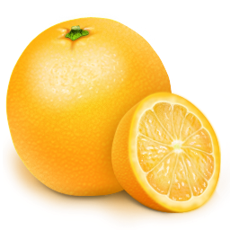

Naranjas la Ribera somos una empresa familiar valenciana que nos dedicamos al cultivo y venta de Naranjas y Mandarinas de Valencia desde hace mas de 100 años
Recibimos pedidos desde la Tienda Virtual situada en nuestra página web y por teléfono en el 963 123 456. Puede realizar su pedido sin dar sus datos bancarios ni de su tarjeta, ya que solo probamos después de que hayan probado nuestro producto
Nuestros productos estan cultivados de forma natural, por lo que mantienen todo su sabor. Es por eso que ademas de ser los favoritos de muchas familias españolas, tambien lo son de prestigiosos cocineros y restauradores, que utilizan nuestras naranjas para elaborar sus mejores platos.
-
Nuestras ventajas:
- Naranjas recien cogidas del arbol
- Naranjas con menos quimicos y cera
- Envios directos a tu domicilio en 24 horas